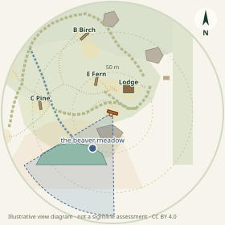
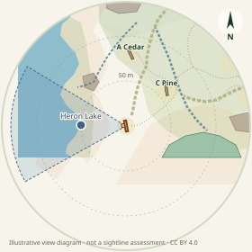
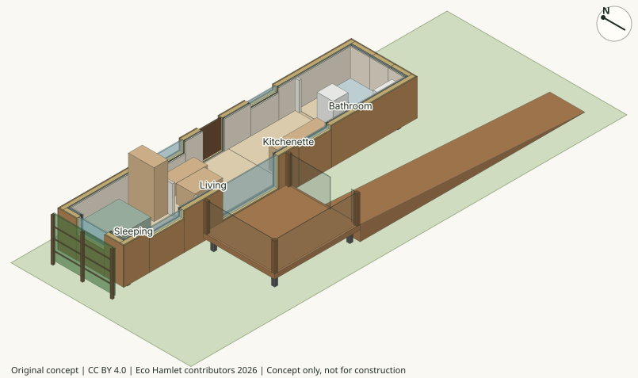

Permanent home · One container · simple
Cabin A · Cedar
A cedar-screened bench above the lake, with the porch turned to the water and the entry tucked behind.
~27 m² clear · ~36 m² footprint
A fictional woodland community beside a Canadian lake
Imagine small homes set into the forest above a Canadian Shield lake. Each has its own character, outdoor room and relationship to the water, rock and trees. Residents share a lodge, a workshop, parking, paths and a commitment to care for the land. The land is held in trust; homes are leased, adapted and, in time, passed on.
This is a vision, not a proposal. Containers Hamlet is a fictional design exploration and an invitation to collaborate. It is not a real property, development application, lease offer, construction plan or building permit package.
Explore the hamlet map Meet the six homes

What it might feel like
The architecture and the map are only useful if they make a believable day possible. This is the day the layout is trying to protect.
The bedroom window faces the forest or a gap in the cedar. The nearest neighbour is a walk away, and the path does not run past the glass.
Mosquitoes and blackflies are part of a wetland landscape. Every home has a screened outdoor room, not a token balcony, so the porch is usable on a buggy June morning.
Paths branch from a shared spine and arrive behind each home. Homes sit on separate benches and face different features. Some roofs may be glimpsed; that is acceptable. Complete privacy is not promised.
The common lodge sits near the parking and the accessible drop-off, away from the quietest homes. It holds the kitchen, the gathering hall, the laundry, the workshop and a generous screened dining room.
The last stretch is on foot. The porch faces the lake, a ridge, a rock shelf or the beaver meadow. The forest closes behind you.
The landscape
Heron Lake lies along the west edge. A beaver meadow and two seasonal drainage channels occupy the low ground. Rock ridges and mixed forest take up most of the parcel. The six homes sit on small benches in separate clearings; the lodge sits at the arrival edge.
The interactive map has its own page, with terrain, the map key, building selection and the illustrative siting checks. Open the hamlet map
Explore a home
Each home has its own orientation, clearing, principal view, path and winter story. Four face the lake through cedar or pine; one faces a sunlit birch glade; one faces the beaver meadow; one looks west into fern and hemlock; one sits above the southern cove. The view diagrams show the principal view cone and the nearest buildings, not a guaranteed sightline.
Each home now has its own page, with anchor links to its orientation, main view, nearby homes, path, winter notes and siting checks. The homes use the single-container Cabin A concept or the two-container pair, while the lodge uses the common lodge concept. See A starting point, not a final design.
Permanent home · One container · simple
A cedar-screened bench above the lake, with the porch turned to the water and the entry tucked behind.
~27 m² clear · ~36 m² footprint

Permanent home · Two containers · wide pair
A ridge-top home that looks into a sunlit birch glade rather than at the water.
~27 m² clear · ~36 m² footprint

Permanent home · One container · simple
A quiet room in the pines, with a long view west between trunks.
~27 m² clear · ~36 m² footprint

Seasonal home · Two containers · wide pair
A seasonal camp at the meadow edge, turned toward the beaver meadow and the south knoll.
~27 m² clear · ~36 m² footprint

Community rental home · Two containers · wide pair
A small rental tucked into fern and hemlock, a short walk from the lodge.
~27 m² clear · ~36 m² footprint

Seasonal home · One container · simple
A low, juniper-edged retreat above the southern cove.
~27 m² clear · ~36 m² footprint

Shared community building · Two containers + hall · community
The shared hearth: kitchen, hall, workshop and the gathering glade.
~124 m² clear · ~142 m² footprint
The starting cabin
The Cabin A concept pairs a 40-foot high-cube container with continuous external insulation, a timber rainscreen, a screened porch and a graded trail approach. The full floor plan, elevations, section and room schedule now live on their own page.
Interior and cutaway
Remove the roof, cut the walls, turn the model and visit each room. The view is drawn in your browser from the same data as the drawings: no WebGL, no plug-ins and nothing downloaded beyond this page. Without JavaScript a static Cabin A cutaway is shown and the room tables below carry the same information. Look inside covers all six cabins and the lodge when JavaScript is available.

Choose a room to highlight it and read about its size, use and accessibility.
The common lodge
Two reused containers and a glazed timber hall hold the shared kitchen, gathering hall, workshop, laundry and universal washroom. The full floor plan, elevations, section and room schedule now live on their own page.
Community land trust
The land would be held by a community land trust. Residents would lease a homesite and may own their dwelling, subject to the eventual legal structure. Some would live here permanently, some seasonally, and some might rent their home when away under community agreements and local rules. None of that has been decided here. This page describes a direction, not a lease, a price or a governance model.
Homes designed for four-season living, with year-round access to shared services and a voice in long-term stewardship.
Smaller or simpler homes used for part of the year, with the same responsibilities to the land and to neighbours.
A community-operated rental home and, if the collective agrees, resident homes let for short periods under clear rules and applicable law. No booking system or rental programme is proposed in this phase.
Water, wastewater, power, heat, connectivity, parking, tools and maintenance are planned together rather than duplicated at every home.
Participation is optional. Homes are private, paths are quiet and the community does not assume a shared ideology beyond care for the place.
Step-free routes, an accessible drop-off, a universal washroom and adaptable homes are design intentions, not claims of compliance.
A land trust could hold the land permanently, lease homesites on long terms and keep housing more affordable by separating the cost of the land from the cost of the building. It could also carry the collective responsibility for the lake, wetland, forest and shared systems. The legal form, membership, resale rules and dispute resolution are not designed here.
A resident might own the dwelling and lease the homesite; the land trust might own the land and shared infrastructure. Alternatively, homes could be owned by the trust and leased to residents. Both need provincial legal advice, a survey, title review and a carefully drafted ground lease. None is provided.
Transparent, documented decisions; a clear role for residents, the trust and any future rental operator; and a way to protect the environment even when consensus is difficult. Consent-based or supermajority models could be explored. Nothing is fixed, and no governance software or agreement is included.
Lease terms, rents, purchase prices, resale formulas, membership fees, short-term rental rules, water and wastewater servicing, energy tariffs, road maintenance, snow clearing, fire response, insurance, accessibility standards and the trust's legal jurisdiction. These are future work with the people who would live here and the authorities that regulate it.
If you want to help define how this community would work, start with the community model notes and CONTRIBUTING.md, or open an issue. Do not include personal information.
Building with nature
The preferred approach is to fabricate as much as possible in a workshop, prepare minimal foundations and access, deliver modules in a planned sequence and restore every disturbed patch. The forest should dominate the buildings, not the other way around.
Reclaimed containers and traceable salvaged materials, replaceable cladding and reversible connections. Reused containers are not assumed to outperform timber construction.
Continuous insulation outside the steel keeps the shell warm and preserves interior space. Thermal bridging, condensation, air and vapour control and fire performance need professional detailing.
Not a default. It may be investigated for difficult junctions after weighing blowing agents, repairability, fire protection, worker exposure and end-of-life impacts.
Explore lightweight extensive roofs, independent trellises and native planting. Do not put a green roof on every building. Planting, solar generation, structural loads, drainage, fire and maintenance must not conflict.
A steel hull helps, but embers, roof edges, vents, decks and access still decide whether a home can be defended. Read the forest fire-resilience guide.
The default roof carries a solar array. A green roof with raised panels is not offered. Solar over a raised garden bed is a separate garden-scale idea, not a roof assembly. Sizing needs measured solar resource, winter loads and snow shedding; the kWp figures are counts, not yields.
Every home and the lodge have a screened porch on an independent frame. Wetlands are protected, not drained or sprayed, so the insects stay and the porch does its job.
A container is a steel shell, not a building. It needs structural verification where walls are cut, fire separation, acoustic and thermal detailing, moisture control, and a floor that may have been treated with pesticides. Reuse can avoid new steel, but transport, reinforcement, insulation and fit-out still carry impacts. A life-cycle comparison is required before claiming an environmental advantage.
The layout distinguishes daily circulation from delivery and emergency routes. Residents park once and walk. A narrow emergency, construction and maintenance track loops through the woods, with temporary crane matting beside it and proposed culverts where it crosses the ridge drainage channel. It is not designed to fire department standards here, and a real project must confirm width, gradient, turning radius, load rating, water supply and winter maintenance with the authority having jurisdiction.
Nothing is drained, filled or sprayed. The beaver meadow is treated as a defining feature. A real project needs a wetland boundary assessment, species and habitat review, hydrological study and approvals. The 30 m buffer on this page is a planning assumption, not a legal setback.
Exterior lighting is restrained to low, shielded path and entry fixtures; no floodlights. Generators and heat pumps are specified and sited to keep sound away from bedrooms. Paths, roofs and access are designed for snow, ice and low winter sun. Dark skies are part of the experience.
A material passport records where each component comes from, what must be checked before reuse, how it is connected and how it comes apart. These are drafts: every documentation status is "Not started". Nothing on this site has been reviewed by a professional.
| Component | Material | Modelled volume | Source | Condition assessment | Connections and disassembly | End of life | Documentation |
|---|---|---|---|---|---|---|---|
| Container shell | Weathering steel, corrugated walls and roof, steel cross-members | 8.83 m³ | Reclaimed ISO container (one-trip or used) | Required before purchase: corrosion, deformation, weld repairs, CSC plate history, prior cargo, and coatings tested for hazardous substances. | Welded original structure; new openings cut and reinforced; bolted lifting and foundation connections where feasible. Module can be lifted and relocated as a unit. | Reuse as a module, otherwise steel recycling. | Not started |
| Container floor deck | Original hardwood plywood deck on steel cross-members | 8.83 m³ | Comes with the container | Original container floors are often treated with pesticides. Test, then replace or encapsulate before occupancy. | Screwed to cross-members Removable panels | Hazardous-waste route if treatment is confirmed | Not started |
| External insulation | Wood fibre board, mineral wool or documented reclaimed board (TBD) | 22.68 m³ | New or reclaimed (TBD) | Reclaimed board: verify type, blowing agent, contamination and fire classification. | Mechanically fixed through battens; no adhesives on the steel Unscrew battens and lift off boards | Reuse; wood fibre can be composted or recovered when uncontaminated | Not started |
| Rainscreen cladding and battens | Durable timber boards on timber battens | 1.86 m³ | Prefer local reclaimed or certified timber | Reclaimed boards: check for nails, lead paint and rot. | Exposed screws for replacement Board-by-board replacement | Reuse, then biomass recovery | Not started |
| Windows and doors | Triple-glazed units in timber or fibreglass frames (TBD) | 0.56 m³ | New or salvaged units of known performance | Salvaged units: verify seal integrity, labelled performance and safety glazing. | Installed in the insulation layer on brackets (outie) Units removable without cutting steel | Glass and frame separation | Not started |
| Porch, ramp and trellis | Timber frame, decking, insect screen and steel connectors | 2.23 m³ | Local timber; reclaimed where structurally graded | Grade reclaimed members for structural use. | Bolted, independent of the container Fully demountable | Reuse, then biomass recovery | Not started |
| PV modules | Crystalline silicon modules on aluminium rails | 1.03 m³ | New or tested second-life modules | Second-life modules: flash test and insulation resistance test. | Clamped to rails; no roof penetrations through the membrane where avoidable Clamp release | Module take-back or recycling | Not started |
| Component | Material | Modelled volume | Source | Condition assessment | Connections and disassembly | End of life | Documentation |
|---|---|---|---|---|---|---|---|
| Two container shells | Weathering steel, corrugated walls and roof, steel cross-members | 17.31 m³ | Reclaimed ISO containers | Required before purchase: corrosion, deformation, CSC plate history, prior cargo, coatings and floor treatment. | Large openings toward the hall need engineered steel framing and transfer beams. Modules can be lifted out once the hall roof is removed. | Reuse as modules, otherwise steel recycling. | Not started |
| Hall frame and roof | Glulam or reclaimed heavy timber, insulated timber roof and floor cassettes | 58.15 m³ | Local certified or graded reclaimed timber | Grade reclaimed members; check for preservatives and lead paint. | Bolted steel connectors for disassembly Cassettes and frames unbolt in reverse order | Reuse, then biomass recovery | Not started |
| External insulation and rainscreen | Wood fibre or mineral wool (TBD); timber rainscreen | 42.67 m³ | New or documented reclaimed | Verify type, contamination and fire classification of any reclaimed board. | Mechanically fixed through battens Board-by-board | Reuse or material recovery | Not started |
| Battery storage | Battery chemistry TBD (prefer chemistries with lower thermal runaway risk) | 1.15 m³ | New, certified system | Certified listing; installation per manufacturer and code. | Separate fire-rated room with exterior access Licensed removal | Manufacturer take-back or certified recycler | Not started |
These are the reviews a real project would need before construction.
| Topic | Reviewer | Status |
|---|---|---|
| Structure: cut openings, lifting points, snow, wind and seismic loads, porch and roof options | Structural engineer (P.Eng.) | Not started |
| Foundations: soils, frost, pile type and depth, wetland and shoreline proximity | Geotechnical engineer | Not started |
| Envelope: air, vapour and moisture control, condensation on steel, thermal bridges | Building envelope consultant | Not started |
| Fire: separations, cladding, spray foam (if any), PV and battery safety, wildland interface | Fire protection engineer and building official | Not started |
| Accessibility: ramp, thresholds, door clearances, bathroom and kitchen | Accessibility consultant; CSA B651 and applicable code | Not started |
| Mechanical and electrical: heating, ventilation, water, wastewater, PV | Mechanical and electrical engineers; electrical safety authority | Not started |
| Code and zoning compliance for the actual site | Architect or qualified designer; municipal building department | Not started |
| Topic | Reviewer | Status |
|---|---|---|
| Occupancy classification: a shared gathering hall may be treated as an assembly occupancy, with higher fire, egress and accessibility requirements | Architect and municipal building department | Not started |
| Structure: large openings in the modules, hall frame, snow drift at roof steps, lifting | Structural engineer (P.Eng.) | Not started |
| Fire: separations, battery room, egress, firefighting access and water supply | Fire protection engineer and fire department | Not started |
| Accessibility: ramps, entrances, universal washroom, kitchen, assembly seating | Accessibility consultant; CSA B651 and applicable code | Not started |
| Water, wastewater and food handling for shared meals | Public health unit and wastewater approvals authority | Not started |
Adapt the architecture
Cabin A and the lodge are examples, not mandatory homes. Future residents will differ in household size, accessibility, work, storage, budget, energy systems, materials and taste. The architecture will also change with the site: a home on a rock bench needs a different foundation, porch and path from one at the meadow edge.

Housing concept
A single 40-foot high-cube container with continuous external insulation, a timber rainscreen and an independent screened porch. Sleeping, living, kitchenette and bathroom zones are arranged so that no room is a pass-through to another.

Shared building concept
Two reclaimed 40-foot high-cube containers act as service cores either side of a 6 m timber-framed gathering hall with clerestory windows. Shared kitchen, pantry, laundry and a separated mechanical and battery room on the north; workshop and tool library, two washrooms (one universal) and a boot room on the south.
Each building is a JSON file describing modules, bays, envelope layers, rooms, openings, fixtures, porches, ramps, trellis, foundations and roof options. data/site.json holds the landscape and a building entry with a model name, position and rotation. The generator and the browser read the same model, so a repositioned or rotated building keeps its floor plan, elevations, sections, cutaway and OBJ geometry. A new housing model can be added as another JSON file and referenced from a homesite without rewriting the landscape. See the data model notes.
A later phase could offer a browser-based editor to choose a cabin design, move windows, adjust partitions, add or remove a screened porch, select finishes and roof options, and download modified plans. It is not implemented in Phase 1.2. What exists now is the supporting data: parametric rooms and openings, configurable porches and roofs, a building registry and generated drawings. There is no promise that every future change can be made safely without professional review.
Also deliberately deferred: a sophisticated privacy optimiser, guaranteed visual privacy, detailed construction engineering, ground lease templates, rental booking, financial modelling, real property mapping and a backend service.
Container Home Design Studio
Nine container homes and a common lodge now live in the Design Lab, grouped by one, two or three modules. Three are editable: a single-module Woodland Retreat, a two-module L-Shaped Haven and a three-module Woodland Courtyard. Change the module positions and rotations, windows, doors, screened porch, deck, insulation, cladding, roof and interior room bands; the plan, exterior and roof-off cutaway update from one model.

One 40-foot container, a generous screened porch and a small deck. The starting point for a single person or couple.

Two containers wrap a sheltered porch and deck. Sleeping and work sit in the rotated wing, away from the shared living space.

Three containers enclose a protected courtyard. A three-bedroom retreat or a small shared household.
Browse the concept gallery Open the Design Lab editor
Concept only. The Design Lab does not replace the authoritative Cabin A or lodge models, does not produce construction drawings and does not add a customised home to the published community layout. Design Lab code is AGPL-3.0-or-later; its original concept data and drawings are CC BY-SA 4.0. The rest of the site remains MIT and CC BY 4.0.
Open resources
These original conceptual assets are reusable under CC BY 4.0; website software is MIT licensed. Files are editable but not engineered drawings. To change a design, edit the JSON source and run node tools/build.mjs: every drawing, model, map, view diagram and table on this page is regenerated from it.
Disclaimer: Concept only. No real site, approved zoning, structural analysis, energy modelling, code review, environmental approval or ground lease is provided. Do not build from these drawings.